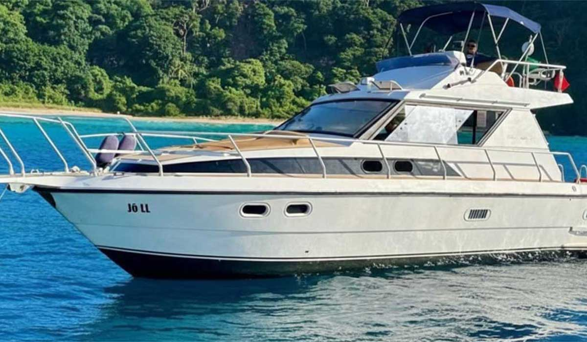

Passeios de Barco em Fernando de Noronha



Sobre o passeio
O passeio de barco em Fernando de Noronha é uma das experiências mais procuradas da ilha. Com saída em horários variados, o roteiro passa por pontos icônicos, com paradas para banho e contemplação da vida marinha.
Roteiro
- Saída do porto
- Parada para banho
- Observação de golfinhos
- Pontos de snorkel
Duração
De 2 a 4 horas, dependendo do tipo de embarcação.
Valores
Os valores variam conforme o tipo de barco e período do ano.
Observações
Passeios sujeitos às condições climáticas e disponibilidade. Recomendamos reservar com antecedência.